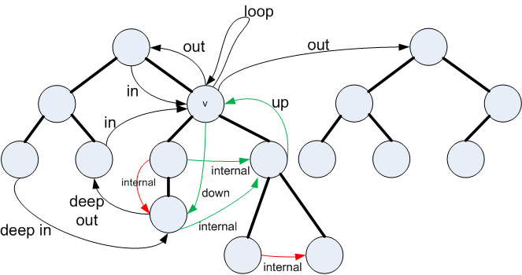
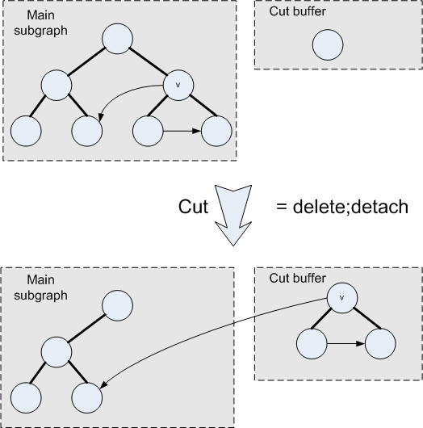
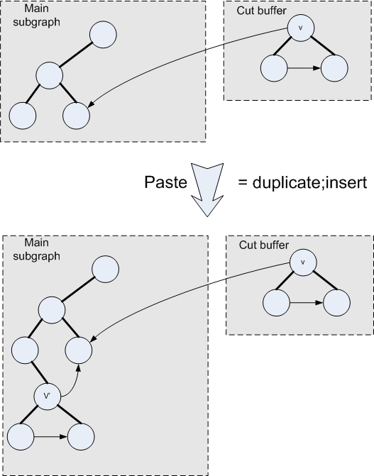

Hierarchical graphs, or higraphs, are graphs in which the nodes are arranged in one or more hierarchies -- i.e. directed trees. If all nodes are at the top of their hierarchy, we have an ordinary graph. If there are no edges, we have a forest (a set of directed trees). A complementary viewpoint is that a higraph is a set of trees with edges between their nodes.
Higraphs were formalized by Harel [1988]. There are a couple of differences between Harel's definition and the definition used here. first, Harel's formulation requires the hierarchy to be directed and acyclic, but not necessarily a forest. I.e. he allows nodes to have multiple parents. Here we are considering only hierarchies that are forests, i.e. each node has 0 or 1 parents. Secondly, Harel's higraphs have a notion of orthogonallity, i.e. that the children of each node are partitioned. Our higraphs do not have any notion of orthogonallity. Rather, one can use two tree levels instead of one. So the higraphs of JHigraph can be considered to be inspired by rather than the same as Harel's higraphs.
For the sake of generality, the children of each node are ordered. Graph edges are directed, edges can be loops (i.e. the source and target of an edge can be the same node), and multiple edges can occur with the same source and target. Both nodes and edges are labeled.
Structures that can be represented well by higraphs abound. Here are some examples.
Edges and nodes can have several relationships. Consider a node v. The following categories of edges are disjoint and comprehensive.
Note that an edge from v to a strict ancestor of v is simply an out edge of v and an edge from a strict ancestor of v is simply an in edge of v. There is no special categorization for these edges, although one could imagine separating them into separate categories.
The following tables summarizes edge classification
| Target | |||||
|---|---|---|---|---|---|
| Desc. | Self | Anc. | Other | ||
| Source | Descendant | Internal | Up | Deep out | Deep out |
| Self | Down | Loop | Out | Out | |
| Ancestor | Deep In | In | Other | Other | |
| Other | Deep in | In | Other | Other | |
| Source | Target | |
|---|---|---|
| Loop | Self | Self |
| Down | Self | Descendant |
| Up | Descendant | Self |
| Out | Self | Other or Ancestor |
| In | Other or Ancestor | Self |
| Internal | Descendant | Descendant |
| Deep Out | Descendant | Other or Ancestor |
| Deep In | Other or Ancestor | Descendant |
| Other | Other or Ancestor | Other or Ancestor |

From the point of view of edges, nodes fall into 3 categories:
These categories are not disjoint, of course, as the same node can be both source and target of the same edge.
For a given node we can speak of the following
The intersection of the exiting and entering edge sets is of course the loop edges of v.
Finally, there is a notion of the governed edges of a node. This notion is particularly used during layout. The views of the governed edges of a node are laid-out by a layout manager associated with the node's view. It is important that each edge be governed at most one node. (Edges governed by no node are laid-out by a layout manager associated with the whole higraph.) The governed edges of a node v are all edges that are up, down or internal with respect to v, but not up, down, or internal with respect to any descendant of v. Notice that in the example above, all the green edges are governed by node v but red and black are not governed by node v.
Note, in particular, that loops are not governed by their source/target node, but rather by its parent (if any). This may seem anomalous, but it is in keeping with the idea that a higraph without hierarchy is just a graph; when a graph has no hierarchy, all the edges should be laid out by a single layout manager, including its loops.
One thing to note about all the examples resented above is that there is generally some notion of well-formedness.
Typically well-formedness is a local property; i.e. a higraph is well-formed if it has appropriate roots and each node is well-formed. A node is well-formed if its child sequence obeys some constraint that does not involve the children's children. There might also be well-formedness constraints involving edges.
It would seem desirable to restrict changes to the higraph to preserve well-formedness. The JHigraph package provides hooks to allow this, especially when it comes to ensuring that the child sequence of each node is valid for that node. To accomplish this, we borrow HTML's notion of tags. (See Tags.)
However there are reasons why we might want a root to not have the usual tag. For example if we "detach" a node, it becomes a root. Consider detaching a "p" node in HTML. The "p" node becomes a root violating the idea that all roots in HTML should be tagged "html". For this reason, the constraint that roots should be appropriate is not enforced by the JHigraph package. Instead applications can enforce this constraint on a subgraph-by-subgraph basis. (See Subgraphs.) For example an HTML editor might ensure that the main subgraph of the graph has exactly one root and that it is tagged "html".
Some applications will involve only displaying higraphs, others will involve the user interactively editing the higraph by means of keyboard and especially mouse commands. Even in the case of simply displaying, we need some sort of interface that will allow the higraph to be built in the first place.
To support interactive editing we need to consider operations such as selection, cut, copy, paste, and drag-and-drop.
Drag-and-drop operations include:
Furthermore in the latter case, we can distinguish between copies and moves. A copy makes a new copy of the node, its children, and edges that end at the node or its children. A move entails a deletion of the node from its original site. A move within the same parent needs to be distinguished from a move to another parent, as a move within the parent may result in a well-formed graph when the delete does not.
Cut and and copy operations on a node should also cut or copy all descendent nodes and all edges to or from any of those nodes.
We will want to be able to give visual feedback to the user about the suitability of drop targets and about whether a move or copy is being done.
Higraphs are represented by the following interfaces
WholeGraph objects act as factories for Node objects, Edge objects, and Subgraph objects. (From here on "node" will mean "Node object" etc.)
Each WholeGraph object is an island. Nodes, Edges, and Subgraphs created by one WholeGraph can not be mixed with Nodes, Edges, and Subgraphs from another WholeGraph in any way. See Subgraphs.
When nodes are first created, they are created as roots and are thus in the WholeGraph. Such nodes are in their "initial" state. (Nodes and edges have two states: "initial" and "deleted".) After being created, nodes can be moved elsewhere in the graph.
Nodes in the "initial" state can be "detached" which moves them to be roots. Roots can be "inserted", which moves them to under another node. Roots can also "replace" other nodes. (The replaced node is deleted.). Nodes can be "duplicated", which creates a copy of the node and all its descendants; the copy becomes a new root of the WholeGraph. Duplicating also duplicates edges. Nodes in the "initial" state can be used as the source and/or target of edges.
The only other state for nodes is "deleted". Nodes in the "deleted" state are not in the graph: They are not roots; they do not have parents or children; and they are not the source or target of any edge. Once deleted, a node can not return to its initial state. When a node is deleted, the graph will delete all pointers to the node and so it will become garbage unless some client is keeping a pointer to it.
Any client that keeps pointers to nodes should be careful not to ever use a deleted node. Consider an object that represents a user's selection of nodes. What happens if one of those nodes is deleted (perhaps via a second GUI)? There are three ways to solve the problem.
The situation is the same for edges. They are created as part of the graph. (And are "initial".) Once an edge becomes "deleted", it is there forever and can not be used for anything.
Sending a "delete" message to a node has the following effects: The node and all its descendents become deleted. Also all edges that have any of these nodes as either source or target become deleted. Edges can also be deleted by sending them a "delete" message.
(Aside: One might wonder about the wisdom of requiring nodes and edges to be explicitly deleted, especially in a garbage collected language like Java. The obvious alternative is to have no master object (the Wholegraph object in our case) from which all current edges and nodes can be reached; when a node or edge is no longer connected to anything we care about it is forgotten and may be garbage collected. Such a design works fine for trees, but when a node may be connected by edges as will as parent-child links, we will need some sort of definitive way to get rid of it anyway.)
Mutations on whole graphs:
Mutations on nodes
Mutations on edges
Mutations on subgraphs and the interactions between the above mutations and subgraphs are discussed below in the section on subgraphs.
The exact interpretation of these mutators is not fixed and can be varied by the application. For example, copying a node (duplicate then insert) representing a row from one table to another might cause the copy of the node to lose or gain children, if the tables have different numbers of columns.
Given this interface, we can support drag-and-drop moves and copies as follows. We assume that the each node's graphical representation (its view) has zones that can be used to grab it and also (optionally) one or more drop zones. Each drop zone in a node view represents either inserting into the node or replacing the node.
Drag-and-drop is as follows. (I assume the following cursor shapes are available: Drop-not-possible, copy-drop, move-drop).
At the start of a drag operation, there is no change to the graph. The cursor is set to show that a drag is in progress ("drop not possible").
When the cursor hovers over a "replace" drop zone, the target node is high-lighted and the cursor is set: to "move-drop" if a detach followed by replace is possible, to "copy-drop" if a detach is not possible but a duplicate followed by a replace is possible, and to "drop-not-possible" otherwise.
When the cursor hovers over an "insert" drop zone, the zone is high-lighted and the cursor is set: to move-drop if a detach followed by insertChild is possible, to copy-drop if a detach is not possible but a duplicate followed by an insertChild is possible, and to drop-not-possible otherwise. An exception is when the drop zone is in the parent of the dragged node; in that case a permuteChildren is considered.
When the mouse is released over a drop zone, the appropriate sequence takes place. This could be one of the following
Support for cut/copy/paste is similar, but involves the cut buffer. These are discussed later.
Node creation can also depend on drop zones. Here are three ways of building a node. One is to drag an icon representing the new node to a drop zone. The second is to select a tool and click on a drop zone. The third is to click on a drop zone whereupon a menu of creatable node-types appears.
The sequences are either
In order to support cut/copy/paste and trash cans and editors that display only part of the graph, we have a notion of subgraphs. The nodes in a subgraph must be a "downward closed" set of nodes belonging to the same WholeGraph as the Subgraph. I.e., if v is in a subgraph, then all of v's children are also in the subgraph. The edges of a subgraph are exactly those graph edges that connect two nodes in the subgraph.
If v is in a subgraph s and is either a root or has a parent that is not in s, then we call v a top node of the subgraph. Note that if v is a top node of s then no ancestor nor descendant of v can be a top node of s.
A subgraph is completely characterized by its set of top nodes.
Mutations on subgraphs include add and remove. These explicitly add and remove top nodes.
Nodes can also be implicitly added or removed as top nodes as follows.
In a typical application we might use one subgraph as the main "document" to be displayed and edited and use other subgraphs as cut buffers and/or trash cans. (Actually it's not a bad idea to use one subgraph as both cut buffer and trash can.)
An editor might focus on only a subgraph of the the main document. For example in a statechart, we might have an editor that displays only one node (and its descendants). In this case the node is put in a subgraph and an editor is created that edits that subgraph.
The figure below shows a UI "Cut" operation. First the initial contents of the cut buffer are deleted. Second the node to be cut is made a root (detached) and is moved to the cut buffer subgraph. (Note that if the cut node is a top node of the main part, it will have to be explicitly removed from the main part.)

(For the picture above, I assumed that it is an invariant that the cut buffer contains 0 or 1 nodes; hence the "delete" operation. If the cut buffer were not initially full, then the delete operation would not be done. When the cut buffer also serves as a trash can, then a limit larger than 1, or no limit, would be appropriate; for example the trash can might hold the last 10 deleted nodes.)
TBD: Currently missing from the picture is an operation to add the detached node to the cut buffer subgraph; this should come after the detach.
The figure below shows a subsequent "Paste" UI operation. First, the content of the cut buffer is duplicated (duplicate operation). (Note that the duplicate is not initially in any subgraph.) Second, the duplicate is inserted (insert) and implicitly becomes in the main subgraph.

If the paste is into the editor, but not as a child of any node, then, instead of an insert operation, the duplicate node will be explicitly added to the main subpart.
The Higraph interface is a superinterface of interfaces WholeGraph, Subgraph, and Node. Each of these represents a forest of trees: For the WholeGraph, the forest is defined by the set of all roots. For a Subgraph, the forest is defined by its top nodes. For a Node, the forest is defined by its set of children. The Higraph interface captures what is common to all these interfaces. The intention is that layout and view classes can be built that are indifferent to whether the higraph they are laying out or visualizing is defined by a Wholegraph, a Subgraph, or a Node.
[Harel 1988] David Harel, `On Visual Formalisms', CACM, vol 31, #5.